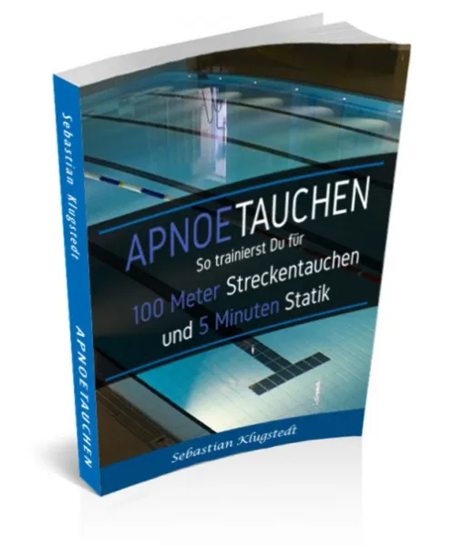

Soccerkinetics Fußballbuch
Produktprofil · Marktplatz-Daten 2026-10-14 · Verkaufsseiten-Recherche 2026-10-14 · Kategorien: Sport
- Soccerkinetics Fußballbuch ist ein/e Buch (gedruckt) in Sport, vertrieben über den Digistore24-Marktplatz von Anbieter Soccerkinetics, gelistet seit 2020-10-22.
- Listenpreis $9.04 (single payment) — Checkout, Auslieferung und Rückerstattungen laufen über Digistore24 selbst, nicht über den Anbieter.
- Käuferschutz: keine standardisierte Garantie-Formulierung gefunden — Rückerstattungsbedingungen vor der Zahlung auf der offiziellen Seite prüfen.
Interesse an Soccerkinetics Fußballbuch? Aktueller Preis, Boni und Garantiebedingungen finden Sie auf der offiziellen Seite des Anbieters:
Offizielle Verkaufsseite ansehen
Affiliate-Link (Werbung) — wir verdienen ggf. eine Provision, ohne Mehrkosten für Sie.
Marktplatz-Daten
| Produkttyp | Buch (gedruckt) |
|---|---|
| Preis | $9.04 (Single payment) |
| Garantie/Rückgabe | Laut Verkaufsseite des Anbieters — vor dem Kauf auf der offiziellen Seite prüfen |
| Anbieter | Soccerkinetics (gelistet seit 2020-10-22) |
Marktplatz-Beschreibung des Anbieters
[NEU] Buchgeschenk für Fußballer! Wir verschenken unser Buch und bitten Fußballer & Fußballtrainer lediglich die Produktions- und Versandkosten zu übernehmen . Damit wollen wir so viele Fußballer, Trainer und Eltern wie möglich erreichen und Du kannst uns dabei unterstützen! Das Buch wurde bereits über 11.500 Mal bestellt und noch nie zurückgegeben . Die Feedbacks sind beeindruckend. Für jedes Buchgeschenk , dass Du erfolgreich empfiehlst, erhältst Du sofort 4.00 € Provision . Bewirb Dich jetzt für unser Partnerprogramm mit Infos zu Dir und Deinem Projekt an: philipp.ludwig@soccerkinetics.com Wir freuen uns auf die Zusammenarbeit!
Von der Verkaufsseite des Anbieters
Seitentitel: Das neue Soccerkinetics Buch als Geschenk für Fußballer, Trainer, Eltern.
Meta-Beschreibung: Wie Du durch neurozentriertes Fußballtraining Verletzungen vorbeugst und Deine persönliche Höchstleistung erreichst!
Hauptüberschrift
"Wie ein Buch mein Training revolutioniert - gratis und mit nachhaltigem Erfolg"
Abschnitts-Überschriften
- Gepaart mit einer effektiven Verletzungsprävention gelingt es Dir endlich das volle Potenzial auf dem Platz zu entfalten.
- Jetzt Dein Buch sichern
- Die 6 Kapitel auf Deinem Weg zur "Peak Performance"!
- Visuelle Dimension
- Koordinative Dimension
- Kognitive Dimension
- Technische Dimension
- Soccerkinetics Prinzipien
- Schule + Soccerkinetics
- Schnell sein lohnt sich , unsere exklusive 5. Auflage ist begrenzt
Einstiegstext
Mit diesem Buch hältst Du die Grundlage für echte "Peak Performance" in Deinen Händen:
*Du beteiligst dich lediglich am Druck & Versand, den Inhalt schenken wir Dir, damit wir so viele Fußballer wie möglich erreichen. Alle Details erhältst Du mit nur einem Klick.
Du trainierst garantiert nach dem neuesten Stand der Wissenschaft und entfesselst so Dein volles Potenzial.
Du erlebst viele neue Bewegungen. Dein Gehirn lernt Deinen Körper völlig neu kennen.
Fragen, die die Verkaufsseite beantwortet
- Ist das Buch wirklich kostenlos?
- Was genau ist neurozentriertes Training?
- Für wen ist das Buch geeignet?
- Warum ist der Inhalt kostenlos?
Recherche-Methode: rohes HTML · 1154 Wörter · Qualität: rich · recherchiert am 2026-10-14. Vollständige Recherche-Datei (MD) ↗
Wie Produkte dieser Art geliefert werden
Allgemeiner Hinweis zu diesem Produkttyp (keine anbieterspezifische Anleitung): Gedruckte Bücher werden physisch versandt; Lieferzeit hängt von Ihrer Region ab und wird im Checkout angezeigt. Für die genaue Anwendung von Soccerkinetics Fußballbuch sind die offizielle Verkaufsseite und die enthaltenen Materialien maßgeblich.
Gut zu wissen
- Keine Garantie-Formulierung in unserer Recherche gefunden — bestätigen Sie das Rückgabefenster auf der offiziellen Seite, bevor Sie kaufen.
Was ist Soccerkinetics Fußballbuch?
Soccerkinetics Fußballbuch ist ein/e buch (gedruckt) in der Kategorie Sport des Digistore24-Marktplatzes, veröffentlicht von Anbieter Soccerkinetics und im Verkauf seit 2020-10-22. Der Anbieter beschreibt es so: "[NEU] Buchgeschenk für Fußballer! Wir verschenken unser Buch und bitten Fußballer & Fußballtrainer lediglich die Produktions- und Versandkosten zu übernehmen . Damit wollen wir so viele Fußballer, Trainer und Eltern wie möglich erreichen und Du kannst uns dabe" (Marktplatz-Beschreibung des Anbieters, leicht gekürzt).
Soccerkinetics Fußballbuch Preis: was Sie zahlen
Der Marktplatz listet Soccerkinetics Fußballbuch zum $9.04 Preis (single payment). Digistore24 fügt im Checkout die gesetzliche Steuer Ihres Landes hinzu — dort sehen Sie den Endbetrag vor der Zahlung. Eine separate Plattformgebühr gibt es nicht; Anbieter können eigene Upsells nach dem Checkout anbieten.
Soccerkinetics Fußballbuch Rückerstattung und Geld-zurück-Garantie
Wir haben keine standardisierte Garantie-Formulierung auf der Verkaufsseite gefunden. Rückerstattungen für Digistore24-Käufe laufen über die Plattform: Antrag über den Support-Link in Ihrer Bestell-E-Mail, innerhalb des Garantiezeitfensters, das im Checkout angezeigt wird. Praktischer Rat: Entscheiden Sie innerhalb des Fensters — wenn das Produkt unter den Erwartungen bleibt, erstatten lassen statt irren lassen.
Mechanik im Detail: So funktionieren Digistore24-Rückerstattungen.
Für wen ist Soccerkinetics Fußballbuch geeignet?
Basierend auf der Sport-Einordnung und der single payment-Abrechnung richtet sich Soccerkinetics Fußballbuch an Käufer, die sport-Lösungen suchen zum Einstiegspreis. Der ehrliche Test ist nicht die Kategorie, sondern Ihre eigene Situation: Werden Sie es realistisch innerhalb des Garantiefensters nutzen? Wenn ja, ist der Preis eine Investition; wenn nein, ist er Ballast — unabhängig von der Qualität.
Ist Soccerkinetics Fußballbuch seriös? Was Sie vor dem Kauf prüfen
Wir bewerten keine Seriosität — das kann niemand, ohne das Produkt zu nutzen. Prüfbare Punkte, alle auf dieser Seite: die Marktplatz-Historie des Anbieters (im Verkauf seit 2020-10-22), die wörtlichen Verkaufsseiten-Auszüge unten (gekennzeichnet als Anbieteraussagen — deren Werbung, nicht unsere Empfehlung), die Garantiebedingungen im Checkout und die Auslieferungsart. Vorsichtsignale bei jedem Angebot: Countdown-Dringlichkeit gepaart mit vagen Rückerstattungsbedingungen, Testimonials ohne Datum und Anbieterseiten, die den Preis bis zum Checkout verstecken.
Wie kommen Sie nach dem Kauf an Soccerkinetics Fußballbuch?
Der Checkout läuft über Digistore24. Nach der Zahlung: Gedruckte Bücher werden physisch versandt; Lieferzeit hängt von Ihrer Region ab und wird im Checkout angezeigt. Bewahren Sie die Bestell-E-Mail auf — sie ist Ihr Schlüssel zum/d zur buch (gedruckt), zu Rückerstattungsanträgen und zum Digistore24-Käufersupport.
Soccerkinetics Fußballbuch Erfahrungen: so recherchieren Sie richtig
Die meisten „Erfahrungsberichte" zu Marktplatz-Produkten sind Affiliate-Inhalte — einschließlich Seiten wie dieser, die an Käufen mitverdienen. Behandeln Sie jeden Bericht (auch unseren) als Ausgangspunkt und prüfen Sie gegen Primärquellen: die Verkaufsseite des Anbieters, die Digistore24-Rückerstattungsrichtlinie und — für sport — unabhängige Communities außerhalb des Affiliate-Ökosystems. Auf dieser Seite sind die Verkaufsseiten-Auszüge unten wörtlich zitiert, damit Sie die Aussagen des Anbieters bewerten können, ohne wegzuklicken.
Wie Sie Soccerkinetics Fußballbuch sicher kaufen
- Öffnen Sie die offizielle Verkaufsseite und lesen Sie das vollständige Angebot.
- Bestätigen Sie Endpreis und Garantiezeitfenster auf der Digistore24-Kassenseite — sie ist bindend, kein Vergleichsportal.
- Zahlen Sie innerhalb des Digistore24-Checkouts (niemals per Überweisung oder Off-Platform-Links).
- Speichern Sie die Bestellbestätigung; notieren Sie die Rückerstattungsfrist im Kalender.
- Prüfen Sie zügig. Der Digistore24-Käufersupport hilft, wenn der Anbieter nicht reagiert.
Vollständiges Recherche-Archiv für dieses Produkt (Markdown: kompletter Marktplatz-Datensatz + wörtliche Verkaufsseiten-Auszüge): Soccerkinetics Fußballbuch — vollständiges Datenarchiv (Markdown-Datei: 37034-soccerkinetics-fu-ballbuch.md).
- Listenpreis & Abrechnung — Quelle: offizielle Digistore24-Marktplatz-API, Stand 2026-10-14. Maßgeblich für den aktuellen Preis ist immer die Kassenseite.
- Verkaufsseiten-Zitate — Quelle: https://www.soccerkinetics.de/buch, abgerufen 2026-10-14 (Methode: rohes HTML). Verify: offizielle Seite öffnen.
- Garantie / Rückgabe — vom Anbieter festgelegt; vor dem Kauf auf der Verkaufsseite bestätigen.
- Nicht von uns geprüft: Produktqualität, Ergebnisse, Testimonials — kein Praxistest für dieses Listing durchgeführt.
Häufige Fragen zu Soccerkinetics Fußballbuch
Antworten aus dem Marktplatz-Snapshot (2026-10-14) und der Verkaufsseiten-Recherche (2026-10-14); Anbieteraussagen sind inline gekennzeichnet.
Was ist Soccerkinetics Fußballbuch?
Soccerkinetics Fußballbuch ist ein Angebot des Typs „Buch (gedruckt)" im Digistore24-Marktplatz, Anbieter: Soccerkinetics, gelistet seit 2020-10-22. Eingepflegt unter Sport. Digistore24 wickelt Checkout, Lieferung und Rückgaben ab.
Wie viel kostet Soccerkinetics Fußballbuch?
Der Digistore24-Marktplatz listet es für $9.04 (single payment). Preise legt der Anbieter fest und können sich ändern — der Marktplatz-Eintrag oben zeigt den Schnappschuss; die offizielle Verkaufsseite zeigt den aktuellen Preis.
Gibt es eine Geld-zurück-Garantie für Soccerkinetics Fußballbuch?
Unsere Verkaufsseiten-Recherche hat keine explizite Garantie-Formulierung gefunden. Viele Digistore24-Produkte bieten 60 Tage Geld-zurück, aber das legt jeder Anbieter selbst fest — bestätigen Sie es auf der offiziellen Verkaufsseite, bevor Sie kaufen.
Ist Soccerkinetics Fußballbuch seriös?
Wir bewerten keine Seriosität — wir veröffentlichen überprüfbare Zahlen: Anbieter Soccerkinetics (gelistet seit 2020-10-22), mit der vollständigen Verkaufsseiten-Recherche archiviert auf dieser Seite (Anbieteraussagen als solche gekennzeichnet). Lesen Sie unsere 6-Punkte-Bewertungsmethode und entscheiden Sie anhand der Zahlen — oder diskutieren Sie Soccerkinetics Fußballbuch auf GitHub.
Wo kann ich Soccerkinetics Fußballbuch sicher kaufen?
Nur über die offizielle Verkaufsseite, die auf dieser Seite verlinkt ist (Checkout und Rückgaben laufen über Digistore24). Prüfen Sie dort Preis und Garantie vor der Bestellung. Der Link ist ein Affiliate-Link — der Kauf unterstützt diese Website ohne Mehrkosten für Sie.
Wie erhalte ich Soccerkinetics Fußballbuch nach der Zahlung?
Der Checkout läuft über Digistore24: Nach der Zahlung erhalten Sie Ihren Zugang oder Download per E-Mail und in Ihrem Digistore24-Kundenkonto. Lieferdetails für diesen Produkttyp: Gedruckte Bücher werden physisch versandt; Lieferzeit hängt von Ihrer Region ab und wird im Checkout angezeigt. Bei Problemen kann der Digistore24-Käufersupport Ihre Bestellung wiederherstellen.
Alle 50 Käuferfragen zu Sport — das komplette Kategorie-FAQ.
Soccerkinetics Fußballbuch auf Reddit diskutieren
In Community-Threads vergleichen echte Käufer Erfahrungen. Wir verlinken Communities, keine einzelnen Posts — Threads verschwinden, Subreddits bleiben:
- r/FITNESS — deutschsprachige Community mit Diskussionen zu sport.
- Reddit-Suche nach „Soccerkinetics Fußballbuch" — Live-Ergebnisse, von uns nicht beeinflusst.
- Top-„Erfahrungs"-Treffer dieses Jahr — selbst nach Aktualität filtern.
Passendes auf Amazon.de
Physische Produkte und Zubehör, die häufig zusammen mit Soccerkinetics Fußballbuch gekauft werden:
- Sportgeräte auf Amazon.de — Top-Ergebnisse, Amazon-Ranking.
- Bestseller: Sportgeräte — live Liste von Amazon, von uns nicht kuratiert.
Werbung: Als Amazon-Partner verdient DigistorePicks DE an qualifizierten Käufen (Partner-tag adminstorede-21). Amazon setzt eigene Preise und Provisionen (niedrige einstellige Prozente — weit unter den 30–75% der Digistore24-Anbieter). Amazon ist ein Convenience-Angebot für Sachprodukte, kein Ersatz für das digitale Produkt oben.
Ähnliche Angebote in Sport

Lets-Dance.net Partnerprogramm (Tanzschulen) Lets-Dance.net ist eine Online-Plattform, die Tanzschulen dabei unterstützt, von neuen Tanzschülern gefunden zu wer

Pilates&Friends Abo Das Online Pilates Paket Das Pilates&Friends Abo ist die Standardmitgliedschaft, die monatlich, halbjährlich oder jährlich abgeschlo

Abnehmen für 237,60€ – und du kassierst bis zu 125,93€ Provision pro Verkauf! Wusstest du, dass der Markt für Abnehm-Programme jedes Jahr Milliarden umsetzt? Un
![[Live] Sportwetten mit KI | Software | +10% Conversion](../assets/products/56820.webp)
Verdiene ~100€ wiederkehrende Provision pro Sale mit unserer KI-Sportwetten Software Empfehle unser kostenloses Online-Training mit über 10% Sales-Conversion un
Ähnliche Preislage in Sport

Vídeos ads for promotions. 74 Seiten XXL Malbuch: Deutsche Nationalmannschaft 2026 - Zum Ausmalen für echte Fußballfans

Werde Teil der zunehmenden Beliebtheit des Apnoetauchens und baue dir ein passives Einkommen auf. Durch die geringe Eintrittsbarriere ist die Conversionrate ung

Du suchst ein Produkt, mit dem du echten Mehrwert anbieten kannst – und gleichzeitig attraktive finanzielle Konditionen bekommst? Dann wirf jetzt einen Blick au

Fußball Malbuch für Kinder – 50% Provision | Heißes Produkt DIGISTORE24 Hole dir 50% Provision pro Verkauf! Digitales PDF mit 50 Ausmalseiten Sofort-Download –
Ähnliche Suchanfragen
Wo Sie es sich ansehen können
Wo Sie es sich ansehen können
Aktuelle Preise, Garantie und Boni finden Sie auf der offiziellen Verkaufsseite:
Offizielle Verkaufsseite ansehen
Das ist ein Affiliate-Link (Werbung) — kaufen Sie darüber, verdienen wir ggf. eine Provision, ohne Mehrkosten für Sie.
Quellen & weiterführende Informationen
- Offizielle Verkaufsseite (aktueller Preis, Garantie, Boni): soccerkinetics.de/buch/ (Affiliate-Link)
- Öffentliche Digistore24-Produktseite: checkout-ds24.com/product/353628
- Vollständige Recherche-Datei (Markdown, versioniert): content/products/37034-soccerkinetics-fu-ballbuch.md
- Affiliate-Supportseite des Anbieters: soccerkinetics.de/partnerprogramm/
- Marktplatz-Kategorie: Sport
Wie wir Produkte wie Soccerkinetics Fußballbuch bewerten
Sechs Prüfungen, ausschließlich mit offiziellen Marktplatz-Zahlen. Die vollständige Bewertungsmethode lesen · unsere Recherche-Standards & Kennzeichnung.
Fragen oder eigene Erfahrungen mit Soccerkinetics Fußballbuch?
Praxis-Tests veröffentlichen wir erst, nachdem wir ein Produkt selbst gekauft haben — aber Ihre Erfahrung hilft anderen Lesern: Diskussion zu Soccerkinetics Fußballbuch auf GitHub starten/verfolgen. Falsche Zahl gefunden? Korrektur melden — jede Seite zeigt ihre Datenstände, Korrekturen gelten für die ganze Website.